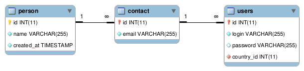

Modeling inheritance
TDBM is an ORM. It maps a database model to PHP classes. PHP classes can extend other PHP classes. In a database, inheritance can be represented this way:

The base class has all the base class elements in it, and each class which derives from it has its own table, with a primary key which is also a foreign key to the base class table. The derived table's class contains only the different elements.
TDBM can detect this kind of data model automatically and generate beans inheriting from other beans.
We have a person table containing people (with a name column).
We have a contact table. A contact is a person, as noted by the foreign key between the 2 id columns. Contacts have an email column.
Finally, we have a users table. A user is a contact, as noted by the foreign key between the 2 id columns. Users have a login and password column.
Notice that the foreign key id is also a primary key. This means that if I create a contact whose ID is 42,
then there must be a row in the person table whose ID is 42. Any row in the contact table most have a matching
row in the person (a contact is a person), but the opposite is not true. A person can have no matching row in
contact (a person is not necessarily a contact). This models correctly inheritance.
TDBM can detect this automatically. It will look for any primary key that is also a foreign key and will assume an inheritance relationship between the two tables.
In the PHP classes, TDBM will generate an inheritance hierarchy between the beans:
User > AbstractUser > Contact > AbstractContact > Person > AbstractPerson > AbstractTDBMObject
So the generated code for the beans will look like this:
class User extends AbstractUser
{
...
}
class AbstractUser extends Contact
{
...
}
class Contact extends AbstractContact
{
...
}
class AbstractContact extends Person
{
...
}
class Person extends AbstractPerson
{
...
}
class AbstractPerson extends AbstractTDBMObject
{
...
}Next step
Let's now learn how to regenerate DAOs when your data model changes.
Found a typo? Something is wrong in this documentation? Just fork and edit it!